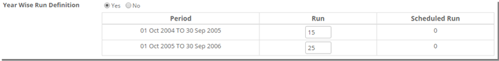

	<section>
		<article>
			<h2>Run definition<span></span></h2>
			<div>
				<p></p>
				<p><i>Run definition can be defined as number of exhibitions/runs acquired for a title.</i></p>

				<p><b>Adding Run Definition</b></p>

				<p>To add run definition, in Run Definition tab click on 'Add' button.</p>

				<p>On clicking Add button, following page will be displayed.</p>

				<div class="triangle-border top">				
					
				</div>

				<p>Select required titles in <b>Title</b>. This Title field shows list of added titles in General tab.</p>

				<p>Select <b>No of Exhibition</b> Runs as either limited or unlimited. By default limited will be selected.</p> 

				<p>User will be displayed with text box to enter no of runs to play for this movie when limited is selected.</p> 

				<p>Note: - If user selects 'Unlimited' then no need to enter runs because user will get rights to play unlimited no of times within specified period. </p>

				<p>Select <b>Year Wise Run Definition</b> either Yes or No. By default it will be selected as No.</p>

				<p>Select "Year Wise Run Definition" as Yes then the rights period will be split according to year definition selected in General tab like below. On the selection of Yes user will be given text boxes to enter no of runs according to year definition like below.</p>

				<div class="triangle-border top">				
					
				</div>

				<p>The sum of runs given over here should not cross runs given at '<b>No of Exhibition</b>' otherwise system will show validation message.</p>

				<p>Select "Rule Right (Yes/No)" If user Selects "No" then no need to select rule definition.</p>

				<p>If user selects "Yes" then existing rules display to select.</p>

				<div class="triangle-border top">				
					
				</div>

				<p>Select "<b>Rule</b>": The selected rule with existing data. Auto populates by the system. And User can view </p>

				<p><b>Day Start Time:</b>  On selection of Rule. It appears as per the Data mentioned at masters.</p>
				 
				<p><b>Plays per Day:</b> On Selection of Rule. Auto displays. </p>

				<p><b>Note:</b> - No. of Runs should be greater than or equal to Plays per day.</p>

				<p><b>Duration of Day:</b> On Selection of rule. Auto displays.</p>

				<p><b>No. of Repeat:</b> On Selection of Rule. Auto Displays.</p>

				<p><b>Repeat Within Exhibition Day:</b> Select "Days". Enter the necessary Days and Select the particular Day.</p>

				<p>Select "<b>Hrs</b>". Enter the required Hours at text box.</p>

				<p>Select "<b>Channel Definition</b>":  'Yes' is selected by default. User need to select required channels as below.</p>

				<div class="triangle-border top">				
					
				</div>

				<p>That means this run definition will be applicable to these selected channels. </p>

				<p>By selecting "Channel Definition" as 'Yes' system displays 'Run Definition' to select.</p> 

				<p>Select "Run Definition" either Channel Wise or Channel Wise (Min/Max) or All Channel or Shared or N/A</p>

				<p>If user selects "Channel Wise" then user need to enter no of runs to be played for selected channels. User will be given with text box for each channel like below to enter runs.</p>

				<div class="triangle-border top">				
					
				</div>

				<p><b>Note:</b> The Total Minimum runs should be less than or Equal to No. of Runs.</p>

				<p>If user selects "Channel Wise (Min/Max)" then user need to enter minimum and maximum no of runs to be played for selected channels like below.</p>

				<div class="triangle-border top">				
					
				</div>

				<p>Enter <b>Minimum Runs:</b> Should be Less than or Equal to Limited No. of runs.</p>

				<p>Enter <b>Maximum:</b> should be Greater than or equal to Minimum runs and should be Less than or Equal to Limited No. of runs.</p>

				<p>If user selects "All Channel-1run/Channel" like below</p>

				<div class="triangle-border top">				
					
				</div>

				<p>'Channel Names' will appears with 1 run each.</p>

				<p>If user selects "Shared" then no of runs specified at 'No of Runs' will be shared among selected channels in Channel Definition.</p>

				<div class="triangle-border top">				
					
				</div>

				<p>'Channel Names' appear on selection of channel definition.</p>

				<p>If user selects "N/A" then no run definition will be applicable.</p>

				<div class="triangle-border top">				
					
				</div>

				<p>The Selected Run Definition is N/A. There is no option to mention the No. of Runs against the channels.</p>

				<p><b>Prime/Off-Prime Definition:</b> If User selects Yes, then following will be displayed.</p>

				<div class="triangle-border top">				
					
				</div>

				<p>User can set Start Time, End Time and No. Of Runs for Both Prime Time and Off-Prime Time.</p>
				<p>Time lag can also be set as displayed. It can be explained as time lag for airing of title on different channels within given time frame. If the run on channels falls in given time lag, it would be counted as 1 run else it will be counted as 2 runs.</p>

				<p>Click on <b>SAVE</b> to add the run definition. It will be displayed on list page like this</p>

				<div class="triangle-border top">				
					
				</div>

				<p><b>Modify or Delete the Run Definition:</b></p>

				<p>Click on Pencil Icon to Modify the record or Click on the <b>Trash Icon</b> to Remove the Run Definition.</p>

				<p>On clicking edit, the record will appears in edit mode along with SAVE and CANCEL button.</p>
				 
				<p>Make necessary changes and Click on SAVE button to save the modified Data.</p>
			</div>
		</article>
	</section>